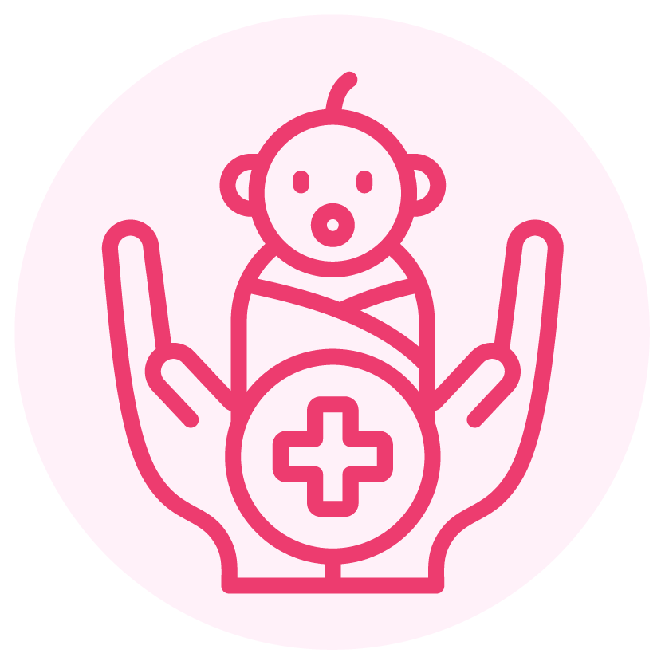
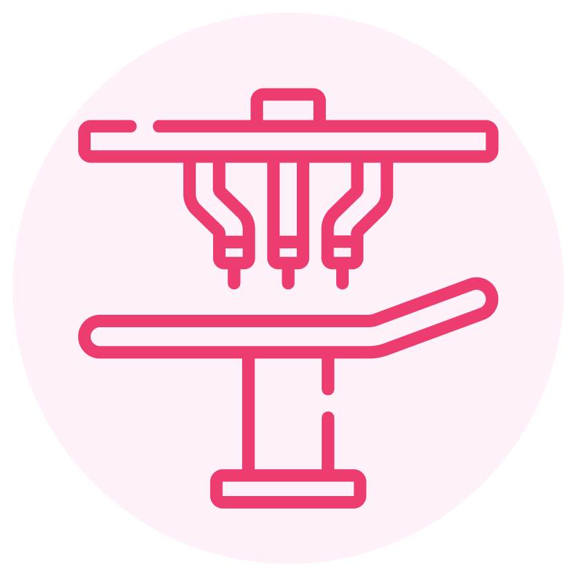

40+ Years Of Pediatric Excellence
Trusted by families across Mumbai for children's healthcare.
For over 40 years, Surya Hospitals has been caring for newborns, infants, children, and adolescents with advanced pediatric surgical care, experienced specialists, and a child-friendly healing environment.
Why Parents Trust Surya Hospitals

India's #1 Pediatric Care
Advanced Surgical TechnologyChildren require specialized surgical care, their medical needs are different from adults.
Our pediatric surgery team combines 40 years of experience, advanced surgical techniques, and compassionate care to ensure every child receives treatment in a safe, supportive, and family-friendly environment.
Whether it's a routine procedure or a complex condition, we're committed to helping your child recover with confidence.
Trusted by families across Mumbai for children's healthcare.
Dedicated specialists trained to treat newborns through adolescents.
Modern operation theatres designed for precision and safety.
Parents remain informed and involved throughout treatment.
Designed to reduce fear and create a comfortable healing environment.
24x7 Specialised critical care for children for emergency needs.
Specialized surgical care for newborns with congenital and neonatal conditions.
Treatment for common childhood surgical conditions with age-appropriate care.
Smaller incisions, less discomfort, and faster recovery whenever clinically appropriate.
Diagnosis and treatment of urinary and genital conditions in children.
Safe and effective treatment using modern pediatric surgical techniques.
Performed with careful planning and child-focused care.
Our specialists provide evaluation and treatment for a wide range of pediatric surgical conditions, including:
For over four decades, Surya Hospitals has been one of Mumbai's most trusted destinations for pediatric healthcare.
Our multidisciplinary pediatric surgery team, ranked #1 in India, combines clinical expertise, advanced technology, and compassionate care to provide safe surgical treatment for newborns, infants, children, and adolescents.
Every child receives personalised treatment in an environment designed to support both healing and families.
If your child has been diagnosed with a condition requiring surgery or has persistent symptoms such as swelling, abdominal pain, hernia, or congenital concerns, consult a pediatric surgeon.
Pediatric surgery is performed by specially trained surgeons using techniques designed specifically for children. Your child's safety is always our highest priority.
Hospital stay depends on the procedure. Some surgeries are day-care procedures, while others may require observation.
Yes. Our specialists explain the diagnosis, procedure, recovery, and answer all your questions before treatment.
Recovery varies depending on the procedure. Your surgeon will provide detailed guidance based on your child's condition.